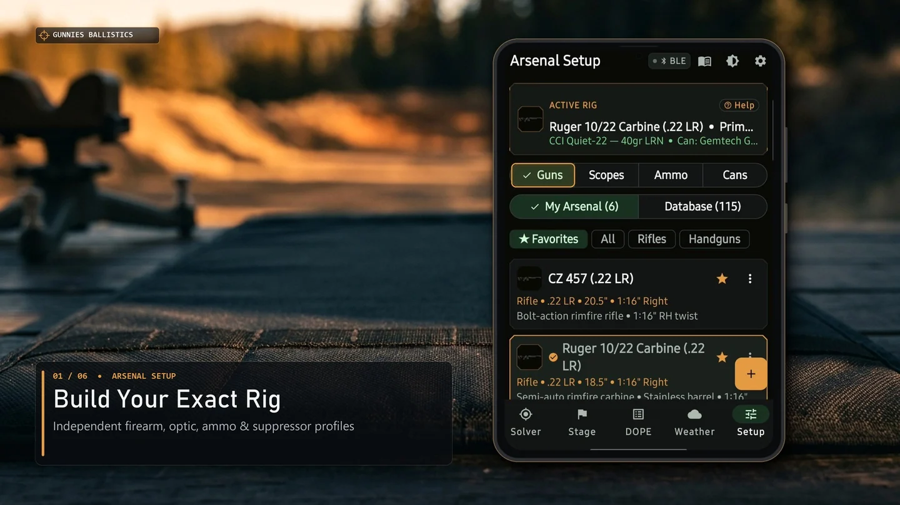
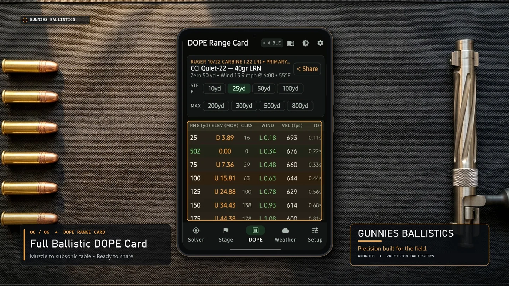

01 / 06 • 0:00Modular Arsenal Setup
Mix and match independent profiles for your rifles, scopes, ammo loads, and suppressors—starting from 338+ factory entries or your own custom setups.
ANDROID PRECISION BALLISTICS
Exact elevation clicks, live GPS weather and 3-zone wind calls, true-to-scale first focal plane reticles, and multi-target match cards—built to run fast and completely offline on your Android phone.
01 // INSIDE THE APP
Inspect any screen up close or jump the walkthrough video straight to that feature.

01 / 06 • 0:00Mix and match independent profiles for your rifles, scopes, ammo loads, and suppressors—starting from 338+ factory entries or your own custom setups.
 02 / 06 • 0:09
02 / 06 • 0:09
Tap Sync GPS to pull local temperature, station pressure, density altitude, and wind—or split shifting terrain winds across Near, Mid, and Far zones.
 03 / 06 • 0:19
03 / 06 • 0:19
Instant elevation clicks, windage holds, stability factor, incline angle lock, muzzle velocity and transonic drop truing, plus one-tap shot logging.
 04 / 06 • 0:29
04 / 06 • 0:29
Switch effortlessly between holding everything or dialing elevation and holding wind inside an illuminated reticle matched to your magnification.
 05 / 06 • 0:37
05 / 06 • 0:37
Save up to 10 targets per match or hunting stage with individual distances, incline angles, wind holds, turret clicks, and time of flight at a glance.

06 / 06 • 0:45Build full muzzle-to-subsonic drop tables in 10, 25, 50, or 100-yard steps with velocity and flight time—ready to read on the line or share with your spotter.
02 // BUILT FOR SHOOTERS
Every feature inside Gunnies Ballistics is designed for speed on the firing line, crisp readability in bright sun or dusk, and reliable accuracy from rimfire to long-range centerfire.
Add up to 5 velocity-banded ballistic coefficients per load to track bullets accurately as they slow downrange across supersonic and transonic flight.
True muzzle velocity cleanly at supersonic distance, then lock MV and calibrate Drop Scale Factor (DSF) for pinpoint subsonic and extended-range hits.
Break tricky canyon or valley crosswinds into Near, Mid, and Far zones—or run fast single-wind calls synced straight from local GPS weather.
Measure uphill and downhill shooting angles right with your phone and keep the high-contrast display awake continuously while you shoot.
Log cold-bore shots alongside predicted vs. actual holds and weather snapshots—and export or restore your full arsenal backup anytime.
Get dialed in fast with hundreds of popular rifles, handguns, scopes, factory ammo loads, and suppressors preloaded and ready to favorite.
03 // SAMPLE DOPE OUTPUT
Ruger 10/22 Carbine • CCI Quiet-22 (40 gr LRN) • 50 yd Zero • 55°F / 29.05 inHg (806 ft DA) • Wind 13.9 mph @ 6:00.
| Range (yd) | Elevation (MOA) | Clicks | Wind (MOA) | Velocity (fps) | TOF (s) |
|---|
04 // ANDROID PHONES & FOLDABLES
Clean dark-mode optics interface tailored for standard Android phones, tablets, and dual-pane foldables. No accounts, no subscriptions, and zero cell signal required once you're on the line.